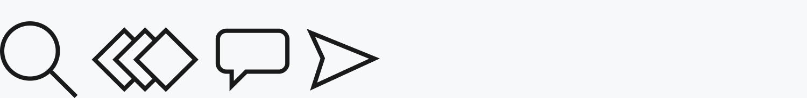

Experience Design Process
This living document is my attempt to formally document the way I work in the research, UX and UI fields as well as the methods, tools and resources I try to use for most projects.
The Guide
Please note: This guide is a work in progress.
Principles
Understand
Ideate
Test WIP
Deliver WIP
Resources
About this Guide
Please note: This guide is a work in progress.
What this guide is...
- A collection of working methods for XD, UX and UI designers
- Links and resources for further learning or hands-on practice
- Mostly built from working knowledge collected over the last 12+ years. Very few of the things documented on this website are my original thinking, so where possible I've cited sources.
What this guide is not...
- Detailed step-by-step instruction and training on how to be a good XD designer
- Substitute for formal design training or education
- Always correct - there will be mistakes! Get in touch if you see any :)
Created by Luke Caish-Sadlek as a method of documenting processes and sharing knowledge.